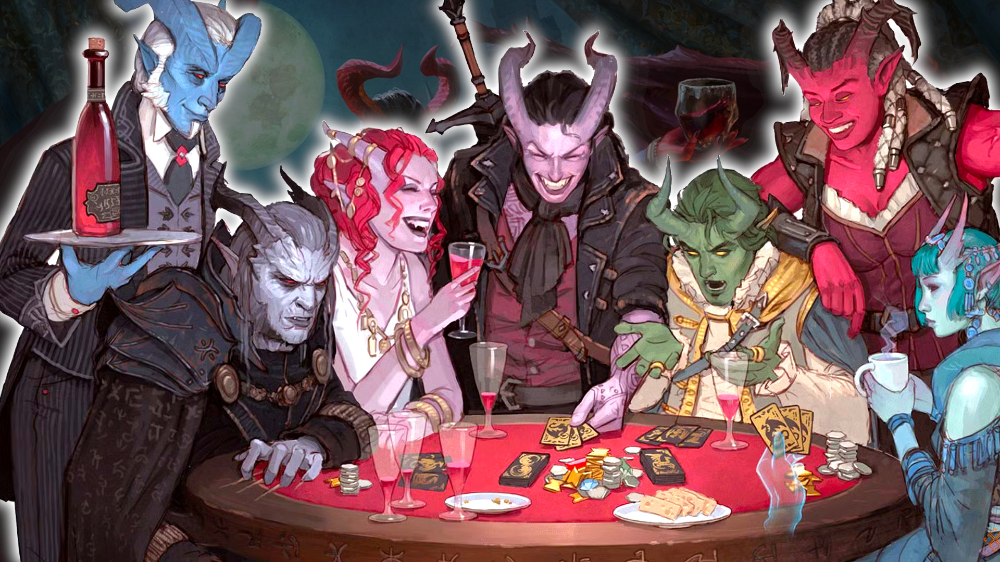
DnD Tiefling 5e - the full species guide
Horned, hellish, and hella charismatic, the DnD Tiefling 5e are humanoids with devils and demons for ancestors. While they have some common features (horns, tails, and colorful skin), the different Tiefling subraces can have hugely varied ancestries and abilities.
This deep-dive into one of 5e's DnD races includes all the Tiefling's core rules. We'll also recommend the best DnD classes and feats for your Tiefling build, as well as helpful tips for roleplaying.
The DnD Tiefling race explained:
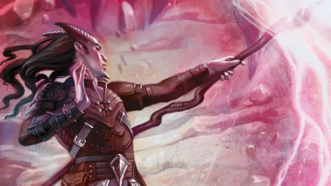
Tiefling rules
Tieflings are mortals with a connection to a fiendish entity, usually a devilish ancestor. While many share similar traits, the actual Tiefling rules - and your character's origin - depend a lot on which edition of the rules you're using.
2014 Tiefling
First, let's address the 5e Tiefling that's been around the longest. The 2014 Tiefling is generally assumed to have been born because a) a pact with Asmodeus cursed their family bloodline, or b) their family tree literally has a devil in it.
There's only officially one type of Tiefling in this version of the rules. However, legacy 2014 rulebooks (ones that Wizards doesn't consider canon and up-to-date anymore) offer a variety of subraces - more on those later.
Ability score increase
Your Intelligence score increases by one, and your Charisma score increases by two.
Age
Tieflings mature at the same rate as humans but live a few years longer - making it to their centenary is a lot more common (adventuring accidents notwithstanding).
Alignment
Tieflings might not have an innate tendency towards evil, but the prejudice they often experience for their ancestral connection to the fiends may harden their hearts. Evil or not, an independent nature inclines many Tieflings towards a chaotic alignment.
Size
Tieflings are about the same size and build as a Human. Your size is Medium.
Speed
Your base walking speed is 30 feet.
Darkvision
Thanks to your infernal heritage, you have superior vision in dark and dim conditions. You can see in dim light within 60 feet of you as if it were bright light, and in darkness as if it were dim light. You can't discern color in darkness, only shades of gray.
Hellish Resistance
You have resistance to fire damage.
Infernal Legacy
You know the Thaumaturgy cantrip. When you reach third level, you can cast the Hellish Rebuke spell as a second-level spell once with this trait and regain the ability to do so when you finish a long rest. When you reach fifth level, you can cast the Darkness spell once with this trait and regain the ability to do so when you finish a long rest. Charisma is your spellcasting ability for these spells.
Languages
You can speak, read, and write the Common and Infernal languages.
2024 Tiefling
The 2024 Tiefling (or the Tiefling 5.5e) comes in many different colors, with varying abilities depending on what kind of creature its family has ties to. The classic devil pact is still possible, but now, Tieflings may be related to demons or yugoloths.
This version of the Tiefling brings back the customization from 2014 that people loved, but the options are a little simpler. Sadly, they're also less optimal for up-to-date character builds.
Creature Type
Tieflings are considered Humanoid.
Size
A Tiefling can be Medium (about 4-7 feet tall) or Small (about 3-4 feet tall).
Speed
Your base walking speed is 30 feet.
Darkvision
You have Darkvision with a range of 60 feet.
Fiendish Legacy
You are the recipient of a legacy that grants you supernatural abilities. Choose a legacy from the Fiendish Legacies table. You gain the level 1 benefit of the chosen legacy.
| Legacy | Level 1 | Level 3 | Level 5 |
| Abyssal | You have resistance to Poison damage. You also know the Poison Spray cantrip. | Ray of Sickness | Hold Person |
| Chthonic | You have resistance to Necrotic damage. You also know the Chill Touch cantrip. | False Life | Ray of Enfeeblement |
| Infernal | You have resistance to Fire damage. You also know the Fire Bolt cantrip. | Hellish Rebuke | Darkness |
When you reach character levels 3 and 5, you learn a higher-level spell, as shown on the table. You always have that spell prepared. You can cast it once without a spell slot, and you regain the ability to cast it in that way when you finish a Long Rest. You can also cast the spell using any spell slots you have of the appropriate level.
Intelligence, Wisdom, or Charisma is your spellcasting ability for spells you cast with this trait (choose the ability when you select the legacy).
Otherworldly Presence
You know the Thaumaturgy cantrip. When you cast it with this trait, the spell uses the same spellcasting ability you use for your Fiendish Legacy trait.
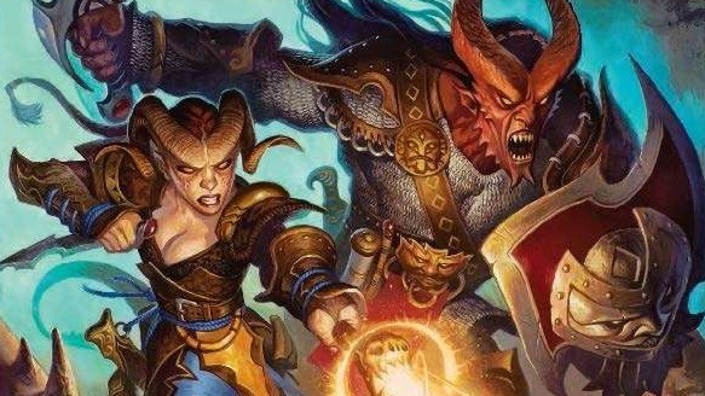
Tiefling subraces
The stats above belong to a specific kind of Tiefling, known as the 'Asmodeus Tiefling'. This is the most common and well-known Tiefling type, but there have been many other Tiefling subraces throughout D&D history, each with slightly different rules and appearance.
In the 2014 D&D rules, only two kinds of Tiefling are considered 'up to date', the Variant and Asmodeus Tiefling. In the more recent 2024 rules, there are three Tiefling types to choose from.
The rest of the Tiefling types are 'legacy content' found in older sourcebooks. They closely resemble the main Asmodeus Tiefling, but their ability score increases, innate spells, and lore backgrounds differ based on which particular archdevil they originate from.
Tip: If you plan to build a Tiefling using these rules variants, be sure to check with your Dungeon Master first.
The playable Tiefling subraces in DnD 5e are:
- Variant
- Baalzebul
- Dispater
- Fierna
- Glasya
- Levistus
- Mammon
- Mephistopheles
- Zariel
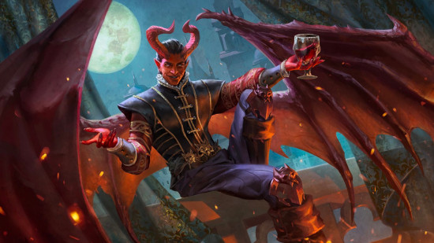
Variant Tiefling
A Variant Tiefling refers to any member of the race that isn't associated with Asmodeus. Their appearance can differ greatly from a normal Tiefling, with all manner of devilish features, such as goat legs, leathery skin, or casting no shadow. Their rules are found in the Sword Coast Adventurer's Guide.
Variant Tieflings tend to have wings - which grant a bonus of 30ft flying speed when not wearing heavy armor. Instead of the regular spells associated with an Asmodeus Tiefling, the Variant Tiefling gains the following cantrips and spells at levels one, three, and five:
| Character Level | Cantrips Spells |
| 1 | Vicious Mockery |
| 3 | Charm Person, Burning Hands |
| 5 | Enthrall |
Baalzebul Tiefling
A Baalzebul Tiefling is linked to the archdevil Baalzebul - who specializes in corruption - and the crumbling layer of hell known as Maladomini. You get +2 Charisma and +1 Intelligence, and you can use the following corruption-based spells thanks to your Legacy of Maladomini ability.
| Character Level | Cantrips and Spells |
| 1 | Thaumaturgy |
| 2 | Ray of Sickness |
| 3 | Crown of Madness |
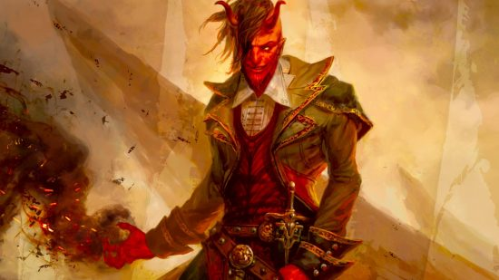
Dispater Tiefling
Dispater is an archdevil who's all about intrigue and sneakiness, so Dispater Tieflings, connected to this devil through their bloodline, get +2 Charisma and +1 Dexterity, and can access these cunning spells that are perfect for spycraft:
| Level | Spells |
| 1st | Thaumaturgy |
| 3rd | Disguise Self |
| 5th | Detect Thoughts |
Fierna Tiefling
Fierna is an archdevil who excels at manipulation, so Fierna Tieflings get +2 Charisma and +1 Wisdom. They can also access spells that will help them make friends and influence people:
| Level | Spells |
| 1st | Friends |
| 3rd | Charm Person |
| 5th | Suggestion |
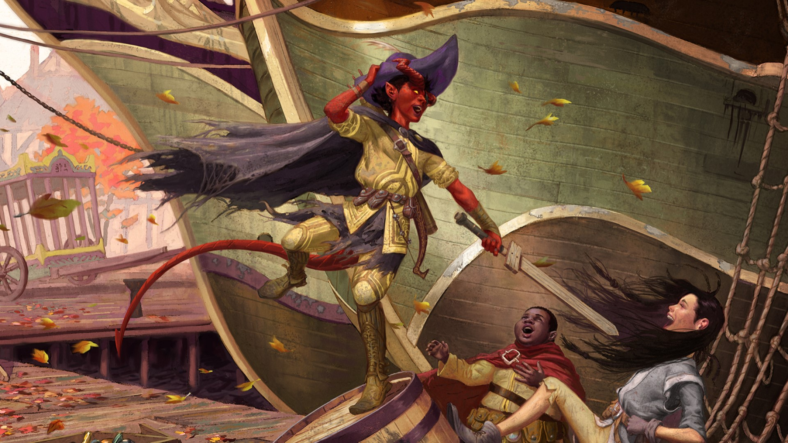
Glasya Tiefling
Glasya is the youngest archdevil and Asmodeus' daughter. Glasya Tieflings are particularly attractive, get +2 Charisma and +1 Dexterity, and gain a set of spells which, like that of Dispater Tieflings, are geared towards subterfuge and stealth:
| Level | Spells |
| 1st | Minor Illusion |
| 3rd | Disguise Self |
| 5th | Invisibility |
Levistus Tiefling
Levistus is the archdevil in charge of the cold frozen sea hell, Stygia. He's also trapped in an iceberg. Levistus Tieflings get +2 Charisma and +1 Constitution, and can access the following cold-themed spells:
| Level | Spells |
| 1st | Ray of Frost |
| 3rd | Armor of Agathys |
| 5th | Darkness |
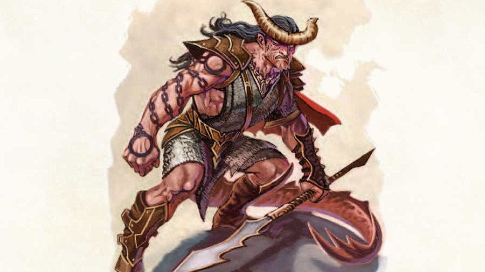
Mammon Tiefling
Mammon loves money, and Tieflings with this bloodline are apparently great at organizing their finances. Mammon Tieflings get +2 Charisma and +1 Intelligence, and they gain the following spells:
| Level | Spells |
| 1st | Mage Hand |
| 3rd | Tenser's Floating Disk |
| 5th | Arcane Lock |
Mephistopheles Tiefling
Mephistopheles is an archdevil who rules the frozen hell of Cania but uses hellfire magic. He's also the greatest wizard out of all the devils. A Mephistopheles Tiefling gets +2 Charisma and +1 Intelligence, and can access these fire-themed spells:
| Level | Spells |
| 1st | Mage Hand |
| 3rd | Burning Hands |
| 5th | Flame Blade |
Zariel Tiefling
Zariel is an archdevil obsessed with battle. As a result, Zariel Tieflings make better fighters than most. They get +2 Charisma and +1 Strength, and their racial spells are related to improving their weapon attacks.
| Level | Spells |
| 1st | Thaumaturgy |
| 3rd | Searing Smite |
| 5th | Branding Smite |
Tiefling names
In keeping with their devilish provenance, Tiefling names incorporate sounds from epic-sounding Old Testament bible characters and fancy Latinate words. Their names often have at least one 'Z' or 'X' in them, and often end in 'ius'; 'ios'; 'ias'; or 'iath' - or, of course, the classic angelic or devilish name suffix 'iel'.
A few traditional Tiefling names might be:
- Moriath
- Axariel
- Zaxion
- Baranius
- Kaivas
- Ixorios
Tiefling name generator
This random generator can generate an authentic Tiefling name. You'll need a regular set of dice! At each stage, roll a die and note the results until you have a complete, and very strange sounding, name.
- Start your name by rolling a D4
| D4 | |
| 1 | First letter of your last name |
| 2 | Last letter of your first name |
| 3 | Z |
| 4 | X |
Example: Tammy wants to invent a Tiefling name. She starts by rolling a D4, getting a three: her Tiefling name start with Z.
2. Generate a random vowel (including 'y') with a D6.
| D6 | |
| 1 | a |
| 2 | e |
| 3 | i |
| 4 | o |
| 5 | u |
| 6 | y |
Tammy rolls a three on the D6 again, adding an 'i' to her name - Zi.
3. Generate a random conjunction (D10)
| D10 | |
| 1 | v |
| 2 | ' |
| 3 | z |
| 4 | x |
| 5 | n |
| 6 | k |
| 7 | r |
| 8 | l |
| 9 | s |
| 10 | t |
Tammy gets an eight on her D10 roll, adding an 'l' to her name - Zil.
4. Generate a random phoneme (D12)
Replace the @ symbol in these phonemes with a random vowel from table two.
| D12 | |
| 1 | n@r |
| 2 | @r |
| 3 | @n |
| 4 | @k |
| 5 | k@r |
| 6 | t@ |
| 7 | h@ |
| 8 | g@ |
| 9 | @g |
| 10 | @ph |
| 11 | ph@ |
| 12 | @t |
Tammy rolls a 12, which will add '@t' to her name. She rolls again on table two and gets a six, so she replaces the @ with a 'y', and adds 'yt' to her name - Zilyt.
5. Add some chaos to your name!
| 1 | Roll on table 1 |
| 2 | Roll on table 2 |
| 3 | Roll on table 3 |
| 4 | Roll on table 4 |
| 5 | Special* |
| 6 | Add nothing |
*If you roll a five on this table, first roll a D4. Then move back to that step in the name generation process. Continue from that step. It is possible for this to happen multiple times.
Tammy rolls a two, earning her another roll on table two for another vowel: with a five, she adds an 'u' to the end of her name, 'Zilytu'.
6. Generate a random suffix to end your name (D8)
| D8 | |
| 1 | ius |
| 2 | ios |
| 3 | ias |
| 4 | iath |
| 5 | iel |
| 6 | eus |
| 7 | dar |
| 8 | el |
Tammy finishes off her name by rolling an eight, adding 'el' to the end of her name: 'Zilytuel'. Appropriately Tiefling-y!
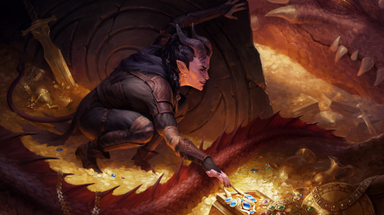
Tiefling virtue names
Some Tiefling characters prefer not to have their name reflect their hellish heritage, and may either choose a name from another culture - or they can choose what's called a Tiefling virtue name.
These are one word long, and they are chosen to represent a given abstract concept, value, or obsession that shapes the character's sense of self. A few possible virtue names could be:
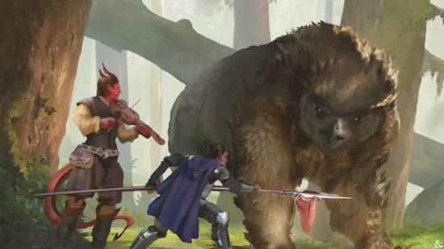
Tiefling classes
In 5th edition D&D, the best classes for Tieflings tend to be those that synergize well with Tieflings' inherent stat benefits - improved Intelligence and Charisma - as well as the race's general proclivity towards spellcasting.
In our experience, the best Tiefling classes are Warlock, Sorcerer, Bard, and Paladin. Here's a quick tutorial on building your Tiefling in each of those classes.
Tiefling Warlock
A Tiefling Warlock is one of the most stereotypical builds there is. Maybe it's the inherent association between Tieflings and devils that drives them to make pacts with those sorts of powers. Maybe it's the horns, or the Charisma casting. Whatever it is, 'Tiefling' and 'Warlock' are almost synonymous in Dungeons and Dragons.
The Warlock has very limited access to spells, so the inherent magic of a Tiefling is a solid way to expand their repertoire. You won't make much use of the Tiefling's Intelligence stat increase, but we think booksmarts are overrated anyway - unless you're planning to play a Wizard.
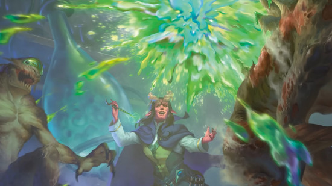
The legacy Tiefling subraces provide many strong options for a budding Warlock:
- Dispater - A Dexterity buff helps you dodge hits in combat, and the spell lists offers some useful utility - and there's no overlap with the Warlock spell list.
- Fierna - The Wisdom boost may not be very useful, but the spells are handy if you want to lean into your Charisma expertise and take on the party's social challenges.
- Glaysa - Also offers a Dexterity buff, and though its spells are already on the Warlock spell list, they're exceptionally useful for utility and scouting, and having extra daily casts will not hurt.
- Levistus - Though this has one our least favorite subrace spell lists, the boosted Constitution it provides will help you absorb more hits.
- Variant - One word. Wings. They're the very best way to keep squishy spellcasters out of danger, particularly at lower levels.
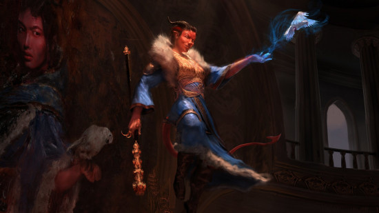
Tiefling Sorcerer
The Tiefling Sorcerer is another glass cannon spellcaster, but it plays very differently from the Warlock. Once again, you're casting spells using your Charisma, and once again, your choice of race gives you a nice boost to a limited range of spells.
We'd argue the Sorcerer is the most complex of the Tiefling-friendly classes, so bear that in mind when choosing your build. That does also mean it can be incredibly powerful.
If your DM allows you to use Tiefling subraces, we'd recommend pretty much any of the ones we suggested above for Warlocks. Since the Warlock and Sorcerer are both Charisma casters who benefit from the extra spells of each subrace just the same, all tips on stats and spells still apply.
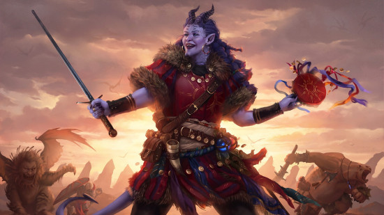
Tiefling Bard
A Tiefling Bard may start with significantly more class spell slots than a Warlock, but at early levels you will greatly benefit from the extra daily casts the Tiefling provides. Plus, given the Bard tendency to play party Skill Monkey, you may actually be able to put the Tiefling's superior Intelligence stat to good use.
Charisma is still the main stat to focus on for the class. It fuels your magic, and it helps you charm your way out of any sticky social situations.
Assuming your DM lets you use the legacy subraces, we'd argue that the Dispater and Glaysa Tieflings are two of the best Bard options, purely for the Dexterity increase. Like all spellcasters, Bards also benefit from the maneuverability that the Variant Tiefling's wings bring. But if you want to expand your spellcasting repertoire, Mephistopheles, Mammon, and Levistus offer spells not already on the Bard's spell list.
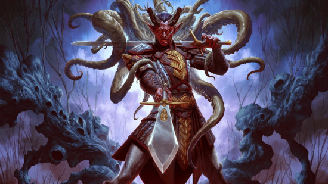
Tiefling Paladin
If you want at least some martial combat prowess, a Tiefling Paladin build is your best bet. You'll still have a bit of magic to manage, but you'll get a lot more play from aggressive spells like the Zariel Tiefling's smiting powers, which always seems to go to waste in other builds.
If you're using the base Tiefling species, one of your ability score increases will be in Intelligence - this should be the only time you ever put points into Intelligence. A Paladin is MAD (multiple ability score dependent) enough as it is, and you'll need all your points to boost Strength and Constitution as well as Charisma.
If your DM gives you access to the legacy subraces, you have a bit more stat flexibility. Zariel Tieflings were destined to be Paladins, with a Strength buff and extra smite spells to boost your limited spell slots. Alternatively, go for the Levistus Tiefling, who gets a Constitution buff along with some very Paladin-friendly spells.
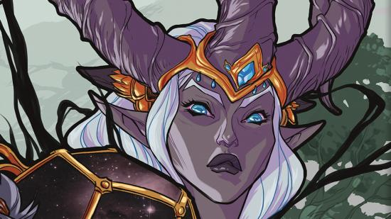
Roleplaying a Tiefling
Tieflings are born with infernal blood. This means that someone in their family, perhaps several generations back, had dealings with a devil. The legacy of this interaction lingers, and new members of the family will enter the world with horns and tails as well as the regular humanoid features.
This unique origin has a lot of impact the way you go about roleplaying a Tiefling. Firstly, it means the Tiefling race doesn't have a specific homeland or place of origin. Your Tiefling can be from anywhere, and they can have any kind of background.
We recommend thinking carefully about where your Tiefling is from. It might change how they were treated growing up, which can have a lot of impact on someone's personality and beliefs.
In traditional D&D lore, Tieflings are a marginalized group, feared and discriminated against because of their lineage. It doesn't matter that a Tiefling had nothing to do with their great-great-grandmother's devilish activities: people will still judge them. If you're interested in exploring this aspect of the Tiefling race, your character might have spent their pre-campaign lives avoiding non-Tieflings, and you might find it difficult to trust others.
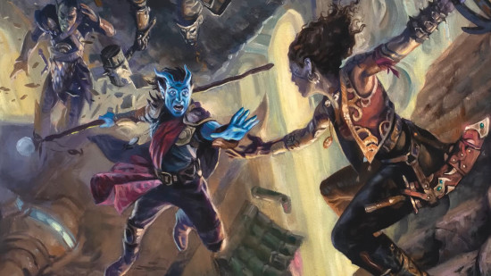
Not everyone wants to roleplay fantasy racism, however. And in recent years, the Forgotten Realms has been presented as an increasingly diverse and tolerant place. So, if you prefer, your Tiefling might have lived somewhere more cosmopolitan, where their neighbors aren't so judgy about ancestry.
Remember that, despite your ties to the Nine Hells, your Tiefling can have any alignment you like. Perhaps your Tiefling chose to rebel against the evil implications of their origin, and they've become the noblest Paladin the Realms has ever seen. Or maybe attempting to learn about their family history led them to some chaotic evil places. The multiverse is your oyster.
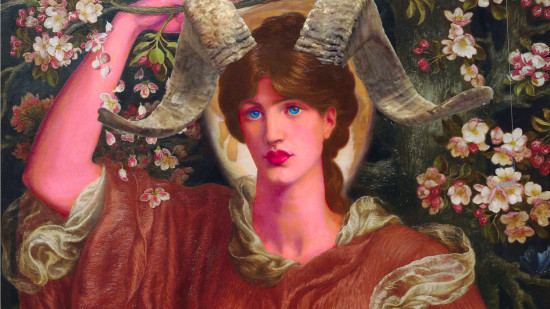
Tiefling FAQ
Here are the answers to some of the most common questions players and DMs alike have about the Tiefling.
Can a Tiefling child be born to human parents?
The answer is that in your game, you should decide! But if you want an official source to cite, consult this table from Xanathar's Guide to Everything (2017).
| Roll (D8) | Tiefling parents |
| 1-4 | Both human |
| 5-6 | One human, one tiefling |
| 7 | One tiefling, one devil |
| 8 | One human, one devil |
Bizarrely, it seems 'both Tieflings' isn't included as an option - which feels like an oversight!
What is the lifespan of a Tiefling?
In the current iteration of Dungeons and Dragons, Tieflings have an average life expectancy of 90-100 years - only a little longer than your average human being.
However, previous editions of the player's handbook, and other earlier lore books like the 2004 Player's Guide to Faerûn, have put the maximum lifespans of Tieflings much higher. Some individuals in those sources lived for 150 years or more, due to their specific infernal heritages from Devils (most of whom are immortal, or at least never die from old age).
Do Tieflings age?
Yes, Tieflings are mortal and go through physical ageing throughout their life. As to what the external signs of ageing might look like on your Tiefling character, as compared to regular human stuff like wrinkles, aching joints, and white hair, well, it's really up to you.
Tieflings' bodily characteristics - like skin, hair, and eye color; length, shape, texture, and color of horns; and so on - vary wildly from individual to individual. So, if your Tiefling is in later life, you can choose for that to show in their appearance in whatever way feels right for the character, for you, and for the folks at your table.
What do Tieflings smell like?
Tieflings have long been described in lore texts as having a noticeable odor about them, usually brimstone, sulfur, or warm or rotting meat.
These naturally occurring whiffs are a side effect of sharing part of their DNA with Devils - creatures native to the Hells, where such aromas are completely normal on account of all the fire, brimstone and dead things hanging around. It's a rather unusual racial trait to have, as few other species are ever described as having a distinctive scent.
Due to the widespread prejudice against Tieflings in many parts of the Forgotten Realms, playing as one can mean exploring themes of marginalization and distrust. And, as physical representations of being an unwelcome outsider go, it doesn't get much more obvious and unsubtle than smelling weird all the time.
So, if those are themes you want your Tiefling's story to touch on, it's not hard to roleplay situations where your character's infernal pong gets in the way of making friends and influencing people. Just remember, always, that for many folks, getting given a hard time because of natural characteristics they didn't choose is an everyday reality, and not something they want to deal with in their fantasy games. Always check with your tablemates on stuff like this - it'll make your games and life better.
Are Tieflings half-devils?
Some Tieflings may have a devil parent, but most are considered a distinct species. Typically, they have a more distant, ancestral connection to the outer planes where fiends reside. It's possible that the ancestors of their people did intermarry with fiends, or simply resided in the outer planes for so long that they were changed by them - but that was a long time ago. In the present, Tieflings are the children (and grand-children, and so on) of other Tieflings.
Why are Tieflings so popular?
It's hard to say for sure, but Tieflings have many appealing features that likely contribute to their decades of popularity. First of all, they're an underdog, a mistreated and overlooked species that many people can relate to. Being misunderstood by most people you meet is prime backstory fodder, whether it creates a character who is edgy and aloof or uncharacteristically kind and friendly.
Tieflings also have a distinct appearance that, thanks to their various skin colors, can be customized as much as a player likes. A purple Tiefling with spiral horns and wings? Go for it. What about a gold Tiefling with flaming eyes and a tail? Also a good option.
This appearance is fantasy-esque, but it's humanoid enough that it doesn't feel too alien for players. It's a perfect middle-ground for newcomers to fantasy who might not feel ready to play a sentient Gelatinous Cube but want to play something a bit more interesting than a plain old human.
Want to discuss your latest Tiefling character build? Join us in the Wargamer Discord.
Originally published on Wargamer.


{kind=link}
{kind=link}
{kind=link}
Leave a Comment